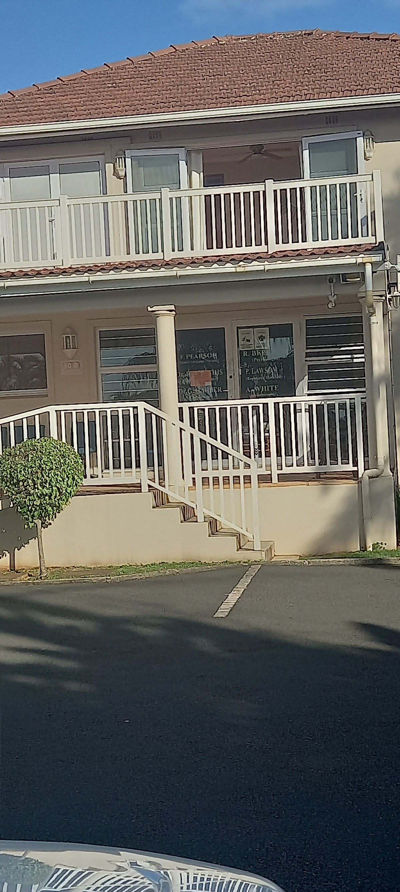

Your journey to recovery and wellness begins here with personalized care.
Contact UsWelcome to Ashleigh White Physiotherapy, where I am dedicated to helping you regain your strength and mobility with passion and precision. Located in the heart of Durban North, my practice is all about providing you with tailored treatments that meet your unique needs. With a strong emphasis on holistic healing, I guide you through your recovery journey with both empathy and expertise, ensuring you feel supported every step of the way.
My fascination with the human body's remarkable ability to heal and adapt inspired my journey into physiotherapy. After years of study and practice, I opened my own clinic to create a space where you feel empowered and cared for. My approach is rooted in evidence-based techniques and personalized care plans, designed to achieve the best possible outcomes for you.
At Ashleigh White Physiotherapy, I hold the core values of integrity, compassion, and excellence in care close to my heart. I am committed to providing a nurturing environment where you feel listened to and respected. Your well-being is my top priority, and I am here to help you achieve your health goals with confidence and support.
Discover personalized physiotherapy solutions tailored to accelerate your healing journey and elevate your well-being with Ashleigh White.
Experience targeted relief and faster recovery with our expert manual therapy and custom exercise plans, designed uniquely for your injury and lifestyle.
Discover the transformative experiences our clients have had with Ashleigh White Physiotherapy.
"I had the privilege of being treated by Physiotherapist Ashleigh White for a severe shoulder injury, and I cannot recommend her highly enough. Ashleigh is exceptionally caring and encouraging, taking the time to clearly explain each procedure and the purpose behind every stage of treatment. Her therapy approach was gradual, precise and highly effective, delivered in a calm and reassuring manner that built confidence throughout my recovery. What truly sets her apart is her commitment to empowering patients : coaching me to self-train responsibly rather than insisting on unnecessary ongoing consultations. She also provided a thorough, formal progress report to my Orthopaedic Surgeon following consultations, ensuring seamless professional feedback and continuity of care. Ashleigh is consistently pleasant, professional, punctual and respectful of time. Her support team, Mala and Sheila, were equally impressive : prompt, professional, friendly and always respectful. Thanks to this outstanding level of care, my recovery was both efficient and successful. I highly recommend Ashleigh without hesitation."— Kaem Narain, ⭐⭐⭐⭐⭐
"Highly rated and regarded physiotherapist. Having studied Human Movement, Biokinetics and Physiotherapy gives her a definite advantage when treating patients in understanding the biomechanics. Ashleigh is a keen sportswomen and a runner. She is patient and understanding. Highly recommended."— cindy lees, ⭐⭐⭐⭐⭐
"Ash White is a world class physio. She will fix you!"— Richard Wraith, ⭐⭐⭐⭐⭐
"Very professional service, quick and effective. You've probably had that feeling before, "that's what I needed". Well done!!"— Neil Lawson, ⭐⭐⭐⭐⭐

We'd love to hear from you — reach out to us anytime.